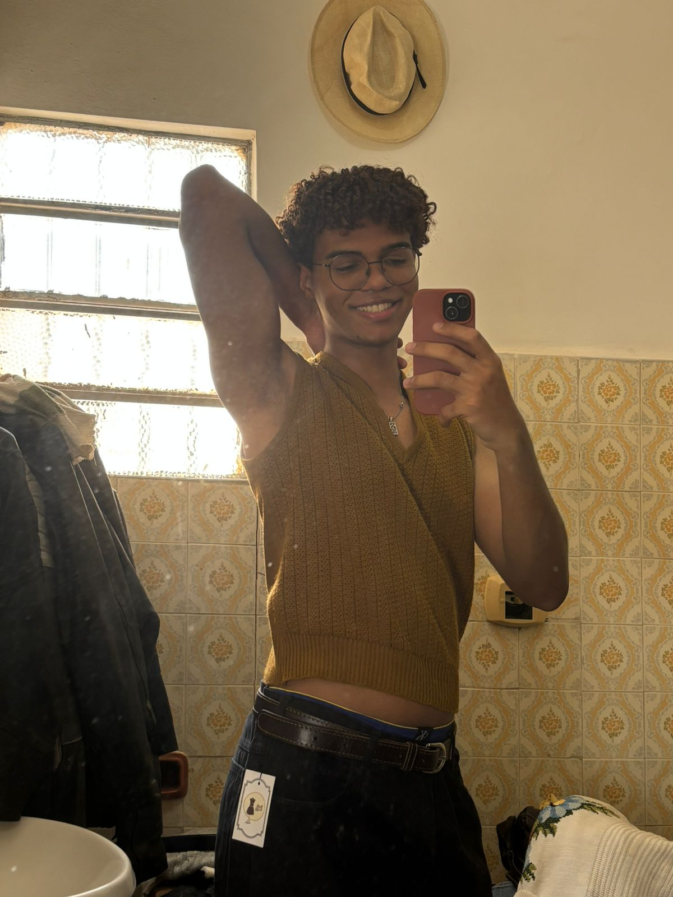
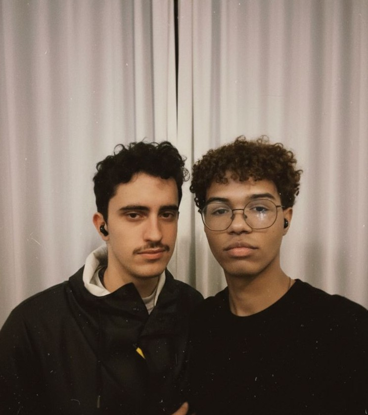

NOSSO CAPÍTULO ÉPICO

❤️🔥 O MEU HERÓI: KAÍQUE

O NOSSO DESTINO ❤️🔥
Saudade… costumam dizer que ela nasce quando sentimos a ausência de alguém. Mas o que é a ausência, afinal, senão a distância daquilo que se ama — ou daquilo que um dia se teve?
E não haverá, também, saudade da própria distância?
Creio que sim.
Há em mim uma saudade de algo que nunca vi, de algo que nunca toquei, mas que, ainda assim, sonho. Talvez os sonhos sejam territórios onde a saudade ganha forma. Ontem sonhei com você. Sonhei que estávamos juntos e que havia leveza no seu sorriso ao meu lado. Despertei, porém, com a tristeza mansa de quem retorna ao vazio — porque você está longe, e não o verei agora.
Sonhei que o beijava, e que você me segurava com força — como se o tempo fosse curto e o abraço, urgente. Ainda assim, eu o queria mais. Eu ardia na ânsia de tê-lo, de sentir seu corpo colado ao meu, como se assim pudesse silenciar o mundo. Há uma delicada melancolia nisso, quase doce, quase dolorida.
Melancolia como ouvir Letter to Hermione, de David Bowie, atravessando um dia frio como este — ou uma noite escura e silenciosa como agora.
Na minha cama, tão distante da sua.
Meus lábios, tão distantes dos seus.
Seu rosto, que minhas mãos não alcançam.
Seus olhos, que minha imaginação mal consegue desenhar.
Seu sorriso, que só me chega pela luz pálida da tela.
E assim, resta-me esperar.
Esperar o dia em que nos veremos outra vez — não no território incerto dos sonhos, mas na claridade do real; não como sombras que se tocam, mas como corpos conscientes, felizes por enfim se pertencerem.
É melancólico, sim, eu sei…
[Fecho o bloco de notas]
Escrito por Kaique